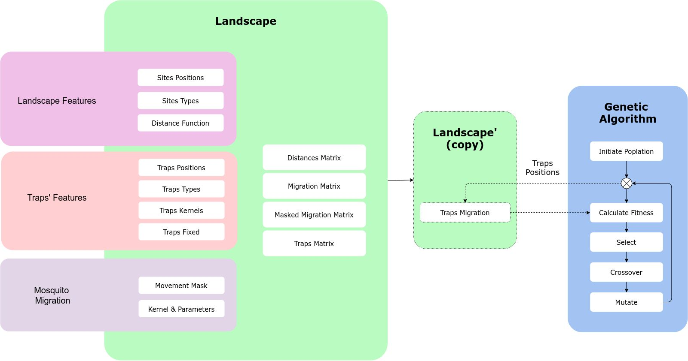

Pkg Breakdown
MGSurvE is built around a landscape object which stores the information of the sites’ and traps’ positions, along with the mosquito movement information.
Workflow
A general workflow in MGSurvE looks as follows:
- Define point-set
Positions (pseudo-random or field data)
Types (pseudo-random or field data)
- Define mosquito movement type
Movement kernel (package-provided or custom implementation)
- Define traps’settings
Positions (pseudo-random or field data)
Types (pseudo-random or field data)
Movable/Immovable (for optimization purposes)
Instantiate landscape object with info from previous steps
- Setup DEAP for Genetic-Algorithm (GA) optimization
Register individual’s and population creator
Register mutation operator
Register crossover operator
Register selector operator
Register fitness evaluator
Run the GA optimizer
Update landscape and save results